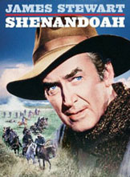

|

|

|
Year of Release: 1965
Cast: James Stewart as Charlie Anderson, Doug
McClure as Lieutenant Sam, Glenn Corbett as Jacob Anderson,
Patrick Wayne as James Anderson, Rosemary Forsyth as Jennie
Anderson, Phillip Alford as Boy Anderson
Key People Behind the Scenes: Directed by Andrew
V. McLaglen. Written by James Lee Barrett. Produced by
Robert Arthur.
Setting: Virginia.
Plot Summary: Farmer Charlie Anderson tries, and
fails, to keep his family from becoming involved in the
Civil War.
Point of View: Although the main characters are
Southerners, the film is largely neutral.
Critics' Response: Reviews were generally
positive. Some praised the film as a good story for
families. Others embraced its antiwar message.
Awards: Nominated for one Academy Award, for Best
Sound.
Historians' Response: The limited commentary from
historians has been mostly positive. Like most other films
before 1980, the film is not strong on details. However, the
movie earns kudos for its focus on the homefront experience,
and for not ignoring race issues.
Budget: $3,500,000 ($24,228,000 in current dollars).
Box Office Gross: $17,265,000 ($120,234,000 in current
dollars).
Source: Christopher Bates for the History 139A website
|